|
惡靈古堡３-----敵人介紹
|
|
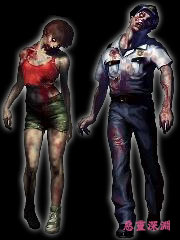 |
 |
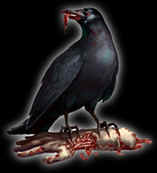 |
| 僵屍
最基本的敵人，三代特別讓他們接 近主角時速度加快，要小心。 硫酸彈有效，一般用手槍即可。 |
僵屍犬
數量不多，會結伴出現，雖然 攻擊力不高，但是攻擊速度 快。硫酸彈有效，卻不適合對 付群體僵屍犬。 |
烏鴉
生命薄弱，不容易攻擊，會成群出 現。用任何武器都能一擊必殺，殺 掉他們的意義卻似乎沒有? |
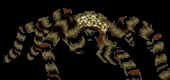 |
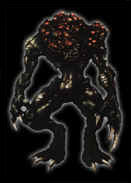 |
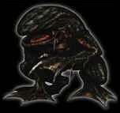 |
| 大蜘蛛
出現在陰暗的下水道，口中不時會 噴出毒液，比起攻擊受到的傷害， 中毒的狀態更令人在意，解決再前 進吧。 火炎彈有效，只是恐怕對天花板無 能為力。 |
Hunter
β 獵人β
動作敏捷，攻擊力也不錯，是 Umbrella研究的生化兵器，為取 得實戰資料阻擋在玩家面前。 如果生命力不是 fine可能死在 他的巨爪下。 火炎彈有效，小心被他閃過。 |
Hunter γ
獵人γ
出現在潮濕陰暗的地方，攻擊力和b 型不相上下，惟反應較慢。 以兩棲類為基礎，由Umbrella歐洲研 究所研發，在生命力低時，會有即 死的吞食攻擊。 火炎彈有效，可在他反應前解決。 |
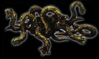 |
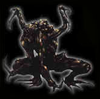 |
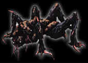 |
| Sliding Worm吸血水蛭
墓地巨蟲的幼蟲，體型小數量多， 快速跑過通常都能安全脫離。注意 身上吸附著吸血水蛭時，無法移動 至其他場景。 硫酸彈有效，卻沒必要浪費。 |
Drain Deimos陰溝惡魔
個性兇殘，會吸取動物的骨髓 來成長自己，並且產卵孵化幼 蟲來攻擊。 火炎彈有效，攻擊時使用一般 榴彈即可。 |
Brain Sucker吸腦怪蟲
跟陰溝惡魔很類似，食物是動物的 腦隨，個性比陰溝惡魔溫馴許多， 帶有毒性，同樣會產卵孵化幼蟲來 攻擊。 火炎彈有效，攻擊時榴彈即可。 |
| Grave Digger墓地巨蟲
吸血水蛭的成蟲，玩家需要兩度對抗他，一次是前往時鐘 之塔 前的下水道，一次是在墓園。他擅長鑽土，會在地下鑽來鑽去 等待攻擊的好時機，玩家需要適當的引誘他現身才能攻擊他， 生命力偏低時會有必殺的吞食攻擊。 硫酸彈有效，連射度太差、命中率太低的問題卻難克服。 |
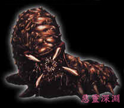 |
|
|
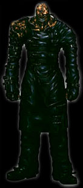 |
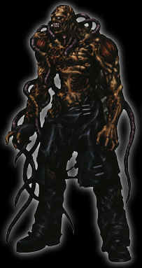 |
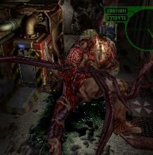 |
|
NEMESIS (CHASER) 追跡者 外型高大強壯，穿著防高熱、防彈的黑色外衣，他是 Umbrella 公司研發的生化武器Tyrant003型，任務是 追殺殘存的 S.T.A.R.S. 隊員，擁有使用武器（火箭砲）的能力，會跑也會閃躲，是有智慧的生物，他的 思考能力被限制，身體有高度的恢復再生能力，還會自行進化，身上的外衣受到一定程度的破壞後也會 損壞而露出數條藤鬚觸手，這些觸手也具有攻擊能力，在生命力不是fine 的情況下被他抓到危險性很高 ，三番兩次被主角打敗後，身體機能受損，為了保護自己，他開始吸收其他生物的肉體增大自己，外型 會變得無法控制，但仍然堅守任務追殺 S.T.A.R.S. 隊員，他的肉體已經不是一般的槍械可以破壞，需要 用特殊的武器。 冷凍彈有效，注意追跡者會閃躲榴彈槍、炸彈發射器、火箭砲這三種武器。 |
||
惡靈深淵Biohazard Abyss http://98.to/coolbio